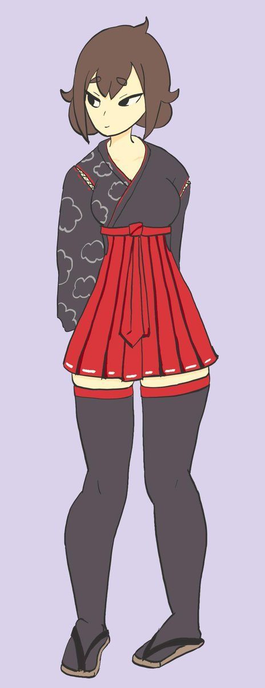

floebooru

Ash Sarai
📅 Posted:
2019-06-05
Tags
ash_sarai_(d-floe)
1girl
arms_behind_back
black_eyes
black_kimono
black_thighhighs
breasts
brown_hair
closed_mouth
flat_color
full_body
hakama
hakama_short_skirt
hakama_skirt
high-waist_skirt
japanese_clothes
kimono
long_sleeves
looking_to_the_side
medium_breasts
negativeinspir1
pleated_skirt
purple_background
red_hakama
red_skirt
sandals
short_eyebrows
short_hair
simple_background
skirt
solo
standing
thick_eyebrows
thighhighs
zettai_ryouiki
zouri
← Previous
Home
Next →